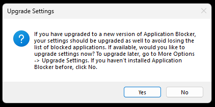
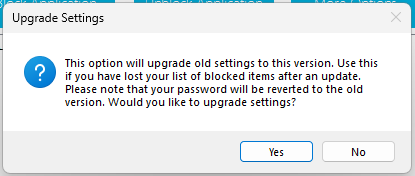

Upgrading Settings

When you launch Application Blocker for the first time, the program will ask you if you want to upgrade your settings. If you have upgraded Application Blocker to a new version, your settings should be upgraded as well to avoid losing the list of blocked applications. Click "Yes" to upgrade your settings. If you have installed Application Blocker for the first time, you can click "No" to continue.
Upgrading Settings from More Options Menu
You can always upgrade your settings by clicking "More Options" -> "Upgrade Settings". This will open a confirmation dialog. You can click "Yes" to continue. Please note that your password will be reverted to old version too.
